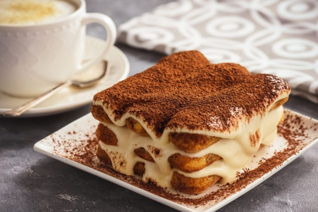

Cuprins
Tiramisu reţetă originala
Ingrediente
Mod de preparare
Rezultat final

Tiramisu reţetă originala
Pentru mine aceasta prajitura reprezinta prajitura perfecta...se face usor, rapid, fara coacere, ingrediente putine si cel mai important, este delicioasa!
Am facut-o in multe feluri, iar daca veti da o cautare pe net veti gasi multe retete...cu oua sau fara, cu diferite arome, cu fructe...pana la urma este important sa gasiti varianta perfecta pentru voi. Eu pe asta o consider cea mai simpla si usoara. Am avut ingrediente pentru doua portii, asa ca una am donat-o parintilor:)
Ingrediente
1 pachet mare de piscoturi Savoiardi
1 cutie mascarpone de 250 gr
200 ml smantana pentru frisca
4-5 linguri zahar pudra cu aroma de vanilie
2 cesti cafea espresso (aproximativ 250-300 ml)
2-3 lingurite zahar brut
50 ml lichior Amaretto
2 linguri cacao
Mod de preparare
In primul rand faceti cafeaua...eu folosesc un espressor automat care face rapid cafeaua. Deci totul merge rapid:)) Indulcesc cafeaua cu zahar brut dupa gust, adaug lichiorul si o las sa se racesaca pana pregatesc crema.
Smantana pentru frisca o mixez impreuna cu zaharul pudra pana ajunge la consistenta dorita. Adaug treptat cate o lingura de mascarpone si mixez pana se desface branza si se incorporeaza in frisca. Cand am terminat de incorporat tot mascarponele este gata si crema.
Pentru asamblare: pe masa de lucru va puneti toate cele necesare pentru asamblarea prajiturii. O tava maricica in care urmeaza sa asamblati prajitura, cafeaua racita o rasturnati intr-o farfurie adanca, castronul cu crema si piscoturile scoase din ambalaj. Treceti rand pe rand cate un piscot prin amestecul de cafea pentru o secunda doar, pe o parte si pe alta. Asezati cate doua randuri de piscoturi in tava, asta inseamna doua pachetele mici, adica jumatate din piscoturi. Turnati crema deasupra, o intindeti, o distribuiti uniform. Peste crema puneti restul de piscoturi la fel cum ati procedat cu primele.
Dati la frigider prajitura pentru 2-3 ore, pudrati cu cacao si serviti.
Sa va fie de folos!
Rezultat final
1Atentie la cat inmuiati piscoturile in cafea...este suficient doar cat le-ati bagat si le-ati si scos imediat. Se inmoaie piscoturile in momentul in care stau la frigider...motiv pentru care este necesar ca prajitura sa stea cateva ore la rece.
2Zaharul pudra cu aroma de vanilie il obtineti in casa astfel: rasniti zaharul in masina de cafea, il puneti intr-o cutie ermetica, iar peste zahar puneti pastai de vanilie de la care ati folosit semintele.